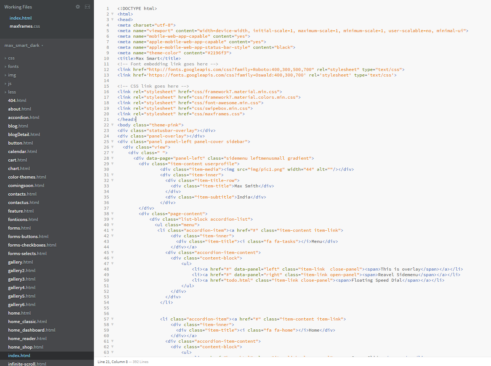
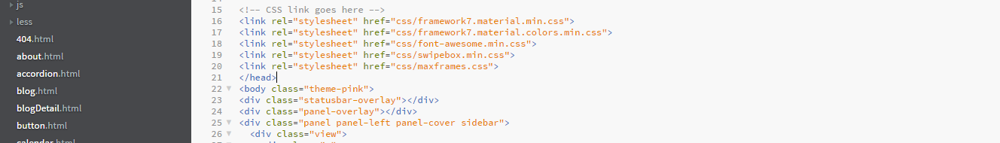
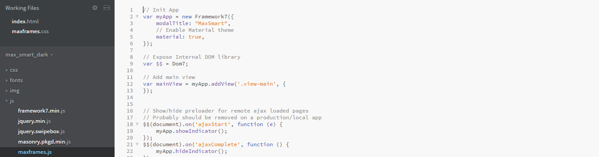
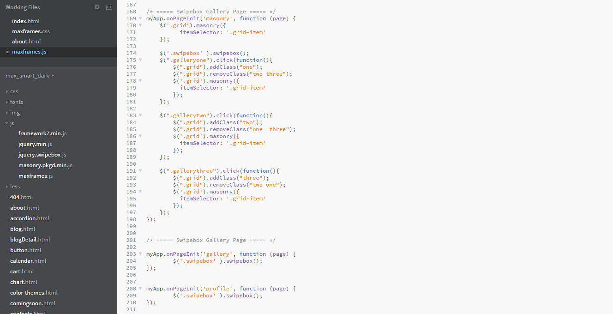

MaxSolaris
Multipurpose Mobile and tablet template
created:16-8-16
by: maxartkiller
email: info@maxartkiller.in
GETTING STARTED
HTML/CSS
All pages are created with CSS and HTML. Files are organized with standard folder structures like all diferent in different folders CSS. JS, Images, fonts. You can keep what you need to use
BEST DESIGN
Framework7 is full featured HTML framework for creating iOS & Android apps. You can refer and explore more features and code execution, customization
ICONS LIBRARY
We all know who are in weba nd appp design that we love font icons. Her we have used Fontaweome icon set. Customize sizes by just css font-size: value
Below code is presented for page structure of default index.html page. As normal practice attached csss files meta tags, titles into head tags. Before bosy closing attach all js files required for templates including framework js.
File structure

All css, js and images files kept in perticlular folder. to make easy to update
CSS Stylesheet

AJAX PAGE INITIALIZATION
We have used framework7 and attached all required files at before body closing,In order to navigate apages and creatin pages, We need to initialize our application and view to run files as per framework configuration below id sample code for app initializaton Custome code can be placed at maxframes.js or app.js file:
Code view

CREATING OTHER PAGES WITH THE FRAMEWORK
To create othere pages we dont required to place all page code like header and foooter js codes. We can just call inner conetn of views from ajax page loadin. So just create those elements only. Here is presentaed sample page created as about.html file:
Code view
Use scripts inside page init

THEMES
While you need to update your theme, you need to change body tag class to the theme you need to apply. Here instead of theme-pink you can use theme-blue, theme-yellow, theme-lime. you can also preview from our demo application under menu > themes page.
Support
Anytime if you require help or support. Feel free to contact me anytime. I will reply in 48 hours. Send a mail from my Themeforest Profile
Thank you
We always try to make things as fluid as posible with the best things only